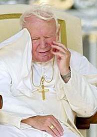
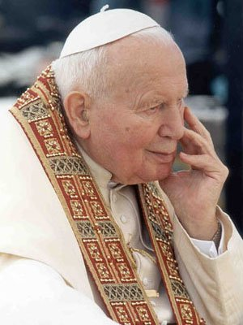
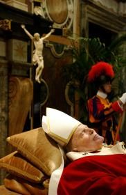
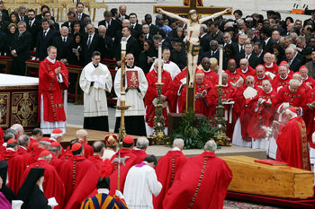

"DECLÍNIO DA SAÚDE"
A saúde de João Paulo II foi motivo
de preocupação para milhões de católicos em todo 
Três anos depois de ter sido eleito Papa, é vítima de um grave atentado na Praça de São Pedro, no Vaticano, no dia 13 de Maio de 1981, por parte do turco Ali Agca. Internado com urgência na Policlínica Agostini Gemelli, em Roma, foi submetido a delicada cirurgia de cinco horas e vinte minutos, com extirpação de 55 centímetros do intestino. A 20 de Junho, 17 dias depois de ter alta, é internado novamente na mesma clínica, para ser tratado de uma infecção de cytomegalovirus, resultante da operação anterior. A 12 de Julho de 1982, sofreu nova intervenção cirúrgica de quatro horas na Policlínica Gemelli, para a remoção de um tumor benigno no cólon (com as dimensões de uma laranja) e também da vesícula biliar.
Em 11 de Novembro de 1993, sofreu uma queda durante uma audiência no Vaticano, tendo fraturado uma omoplata (osso do ombro), vindo a ser operado na mesma Policlínica. Em 1994, sofreu nova queda, quando terminava um banho no seu aposento privado, tendo fraturado o fêmur direito. Na ocasião foi implantada uma prótese de titânio em substituição a cabeça do fêmur. Ainda nos anos 90, começaram a se manifestar os sintomas da Doença de Parkinson, que logo se acentuaram cada vez mais: com tremor da mão esquerda, a coluna curvada e o olhar ausente. A 8 de Outubro de 1996, ingressou mais uma vez na Clínica Gemelli, para a remoção do apêndice. Em Março de 2002, os médicos diagnosticaram uma artrose no joelho direito, o que o obrigou a deslocar-se numa cadeira de rodas especial, a qual passou a utilizar para presidir às celebrações e outros atos. Em Setembro de 2003, durante a visita à Eslováquia, já eram visíveis as dificuldades de João Paulo II para respirar e para mover-se. Em Setembro do mesmo ano, teve que cancelar uma audiência geral devido a oclusão intestinal. A 10 de Fevereiro de 2005, na sequência de um processo gripal, padeceu de laringo-traqueíte aguda, motivo que o conduziu novamente à Gemelli. A 24 de Fevereiro de 2005, é submetido a uma traqueotomia, com o fim de facilitar a sua respiração.
ÚLTIMOS DIAS E MORTE


